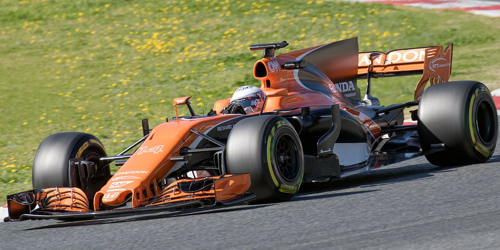

Hasta el momento tiene 2231 Puntos desde la primera vez que puntuó en el deporte
2 campeonatos mundiales en la Formula 1 (2005/2006)
370 carreras empezadas en la Formula 1 (Establece el record del piloto mas lonjevo de la hiatoria del deporte)
1 campeonato de la WEC (World's Endurance Championship)
2 veces ganador de las 24h de Le Mans y 1 vez ganador de Daytona
Actualmente es el piloto con mas Kilometros recorridos en la historia del deporte sumando un total de 92.643
Párrafo Bibliográfico resumiendo la vida de Fernando Alonso Díaz
Fernando Alonso Díaz, que nació en Oviedo en 1981 fue y en la actualidad uno de los pilotos de automovilismo mas importantes de la historia logrando 2 mundiales de Formula 1 y haciendo frente a retos que nadie se imaginaba como participar y ganar el mundial de resistencia (WEC) y ser parte del Dakar.
Lista de Méritos personales o Academicos
Primaria (Colegio Santo Ángel de la Guarda)
EGB/Secundaria (Colegio Santo Ángel de la Guarda)
Últimos estudios conocidos en el Instituto Leopoldo Alas Clarín de San Lorénzo
Minardi F1 Team fue un equipo italiano que compitió en la Formula 1 desde 1985 hasta el 2005. Siempre fueron un "Equipo Low Cost" por lo que en 2001 fichar a un jovencisimo Fernando Alonso era de la mejor de sus opciones y mas después de ganar en las categorías amateurs
Renault F1 Team fue un equipo de Formula 1 francés que se consagró como uno de los grandes en el deporte, tuvieron temporadas bajas, pero después de que el veiteañero Fernando Alonso demostrara que competía al mejor nivel de todos le ficharon como primer piloto en 2003 y ahí fue cuando en Malasia d su primera temporada hizo su primera pole y en Hungría grabaría su nombre en el libro de los records y en 200 y 2006 ganaría sus 2 únicos mundiales de Formula 1 hasta la fecha
Mclaren fue el siguiente destino del vigente campeón mundial, el conjunto de "Woking" había albergado durante la historia a los mejores pilotos de la historia y Alonso iba a ser uno de los de su lista firmando en 2007 pero saliendo de la escuderia al final de la temporada por las polemicas habidas durante la temporada
Mclaren (2015-2018)

Después de unos 4 años en ferrari Alonso volvió a Mclaren con la esperanza de que su proyecto de motores Honda los volviese a la cima pero fracasó, en 2018 volvieron a los motores Renault pero no habia nada que hacer, después de 16 años en la elite, Fernando Alonso se retiraba al finalizar el año 2018
Al acabar la temporada 2009, Alonso definitivamente se desvinculaba de Renault para siempre, 2 años en los que el coche no fue suficiente mas que para ganar un par de carreras y hacer un par de podios, en ese momento llegó a sus manos un contrato de oro, el de la escudería italiana Ferrari, la mejor de la historia del automovilismo, disputó 2 mundiales vestido de rojo quedandose 2 en 2 ocasiones, aunque en 2014 decidió abandonar al "Cabalino Rampante" y a los "Tifosi" para encontrar mejores oportunidades en otros equipos
2 largos años pasaron en los cuales Fernando Alonso, El Nano Participó en el Rally Dakar con su Idolo Carlos Sainz Sr y en el mundial de resistencia, pero Alpine le daría una oportunidad de volver al gran circo, aunque poco se sabía de que iba a acabar en Aston Martin, una escudería nueva en el sector pero con un proyecto bastante apetecible, este 2023 se unío y nos dejó joyas automovilisticas y 7 podios, ademas de una afición rejuvenecida que siempre le ha estado apoyando
Video que muestra los mejores adelantamientos de Fernando Alonso en su carrera en la Formula 1